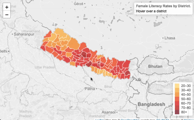
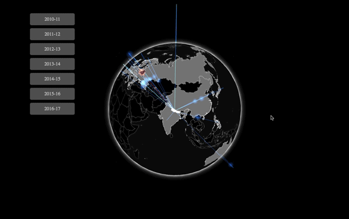

This is a capstone project I completed during my last year of high school. The idea came from my own experiences working on the Nepal Women's Project, a non-for-profit I had co-founded two years earlier, and finding it difficult to put statistics and information in context without extensive experience or knowledge in what I was trying to learn about. The end result is a combination of art and technology to visualize a series of datasets focusing on the socioeconomic development of Nepal. The project consists of four visualizations, each focusing on a different dataset or topic.



